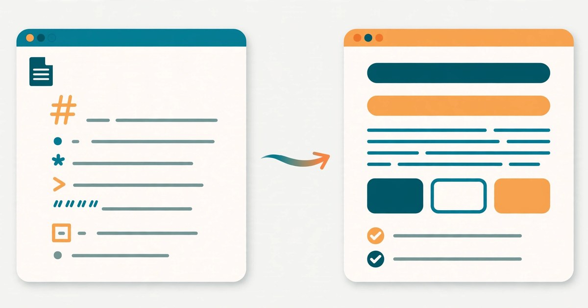

How to Convert Markdown to HTML Online
Paste your Markdown, get clean HTML instantly — with a live preview, no signup, and nothing uploaded anywhere.
November 6, 2026 · 6 min read

Paste your Markdown into the Markdown to HTML tool and it converts to clean HTML instantly, with a live preview as you type. No signup, no upload, no waiting — you copy the HTML and paste it straight into your page.
Markdown is the plain-text shorthand used by README files, notes apps, documentation sites, and many blogging platforms. Instead of writing angle brackets by hand, you write # for a heading, **bold** for bold, and - for a list item. It reads naturally as plain text, yet converts precisely into HTML. The catch is that most websites, email editors, and content systems want HTML, not Markdown — and hand-converting a long document is slow and error-prone. That is exactly the gap this tool fills.
What the Markdown to HTML tool does
The tool gives you three panes: Markdown on the left, a live preview in the middle, and the HTML output below. Type or paste Markdown and both the preview and the HTML update live as you type — there is no convert button to press and no page reload. When the result looks right, click Copy HTML and the generated HTML goes to your clipboard, ready to paste.
It supports the everyday Markdown you will actually use: headings from # to ######, **bold**, *italic*, links, lists, blockquotes, and code blocks. Everything runs in your browser, so your text is never uploaded anywhere — useful when the document is a draft you have not published yet.
Convert Markdown to HTML in 4 steps
- Open the Markdown to HTML tool — it loads instantly and needs no account.
- Type or paste your Markdown in the left-hand box. Watch the live preview update as you type; if a heading or list does not render the way you expected, you will spot it here, not after publishing.
- Check the HTML output. Scroll through the generated HTML to confirm the tags match your intent — headings as h1 to h6, emphasis as strong and em, lists as ul and li.
- Click Copy HTML and paste the result into your website, blog editor, email template, or document. One check of the preview in the destination is still worth doing, because different platforms style the same tags slightly differently.
A worked example: 85 characters of Markdown, 142 of HTML
Take this short project note written in Markdown:
# Project Notes
Tasks done **this week**:
- Design mockup
- Client call
- Bug fixes
That is 85 characters of plain text. The conversion produces 142 characters of HTML:
<h1>Project Notes</h1>
<p>Tasks done <strong>this week</strong>:</p>
<ul>
<li>Design mockup</li>
<li>Client call</li>
<li>Bug fixes</li>
</ul>
In other words, the Markdown version is 57 characters shorter — about 40% less typing — and far easier to read and edit. The saving grows with the document: every heading, list, and bold passage you write in Markdown avoids a pair of opening and closing tags. A single heading shows the same pattern on a small scale: # Weekly Update is 15 characters, while <h1>Weekly Update</h1> is 22.
The conversions you will use most
- Headings: # Heading becomes <h1>, ## becomes <h2>, all the way to ###### for <h6>. More # symbols mean a smaller heading.
- Bold and italic: **12%** becomes <strong>12%</strong> (7 characters in, 20 out), and *returns* becomes <em>returns</em>.
- Links: [ToolsHub](https://toolfreely.risingnest.com/) becomes a normal clickable link with that address as its destination.
- Lists: lines starting with - become a bulleted list, with each line wrapped in its own list item.
- Quotes and code: a line starting with > becomes a blockquote, and fenced code blocks keep your code exactly as typed.
Markdown vs writing raw HTML vs a visual editor
Writing raw HTML gives you full control, but it is slow: every heading, paragraph, and list item needs opening and closing tags, and one missing tag can break the layout of the whole page. A visual editor hides the tags, but it often produces bloated HTML full of extra spans and inline styles, and copying text out of it can carry formatting you did not want.
Markdown sits between the two. You write plain text that stays readable in any editor, version control shows clean line-by-line changes, and the converter produces tidy, standard HTML with no extra styling baggage. That is why documentation, README files, and static-site blogs are usually written in Markdown first and converted at the end.
5 mistakes that break a Markdown conversion
- Forgetting the space after #. "#Heading" without a space is not a heading in most converters — it stays as plain text. Always write "# Heading".
- Leaving no blank line before a list. A list pasted directly under a paragraph can merge into it. Put one blank line between the paragraph and the first list item.
- Mixing list markers. Stick to one marker — - throughout a list. Switching between - and * mid-list can split it into two separate lists.
- Writing links without the full address. A link needs both parts: [visible text](full-address). A missing bracket or parenthesis turns the whole line into literal text.
- Skipping the preview check. The live preview exists to catch exactly these slips. A ten-second glance before copying saves a broken page after publishing.
Frequently asked questions
What is Markdown?
Markdown is a plain-text writing format that uses simple symbols for formatting: # for headings, ** for bold, * for italic, - for list items, and [text](url) for links. It is designed to be readable as plain text and easy to convert into HTML.
How do I convert Markdown to HTML online?
Paste or type your Markdown into the Markdown to HTML tool. The live preview and the HTML output update as you type, and you click Copy HTML to copy the result. No signup is needed and everything runs in your browser.
Is the converted HTML safe to paste into a website?
Yes, for ordinary content. The tool produces standard HTML tags such as h1, p, strong, em, ul, li, a, and blockquote. Paste it into your page or editor, then check the preview once before publishing, especially for links.
Does Markdown to HTML conversion upload my text anywhere?
No. With ToolsHub's tool everything runs in your browser, so your text is never uploaded to a server.
Related tools: Markdown to HTML · HTML Encoder / Decoder · JSON Formatter · Word Counter